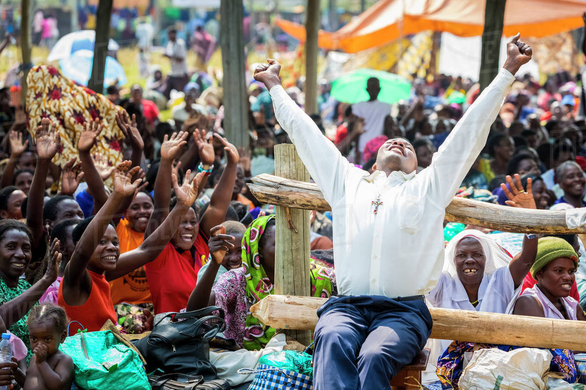

Uganda Charismatic Renewal
Uganda Catholic Charismatic Renewal is located in Kampala, Uganda. Company is working in Associations business activities. 
Victory City Church Central
Victory City Church is next to Ntinda and is located in Central Region, Uganda. Victory City Church has a length of 0.12 kilometres.
- amenity: place_of_worship
- building: yes
St. Kakumba Chapel
St. Kakumba Chapel is next to Kyambogo University and is located in Uganda
- amenity: place_of_worship
- religion: christian
St. James Catholic Parish Butabika
St. James Catholic Parish Butabika is next to Luzira and is located in Kampala District, Central Region, Uganda
- amenity: place_of_worship
- religion: christian
New Miracle Center church Kazo
Located in Kazo, Kampala, the church is led by Pastor Elijah Mugerwa
- Website
- Contact: (+256) 782-300379 | (+256) 774-189897 | (+256) 772-882434

Miracle Center Cathedral
The Miracle Centre Cathedral is a Pentecostal megachurch in Kampala, the capital of Uganda. The church's Senior Pastor is Robert Kayanja. In 2017, the attendance is 15,000 people. The church is founded in 1991 by Robert Kayanja. In 2002, the Cathedral was built at a cost of US$7 million, half of which was donated by a South Korean woman who was healed after Kayanja prayed for her. The building, in the Rubaga division of Kampala, has a capacity of 10,500, and the church claims to be the biggest auditorium in East Africa
Website